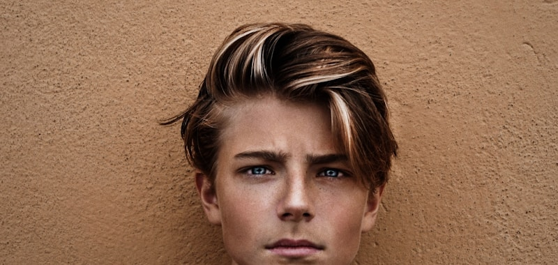
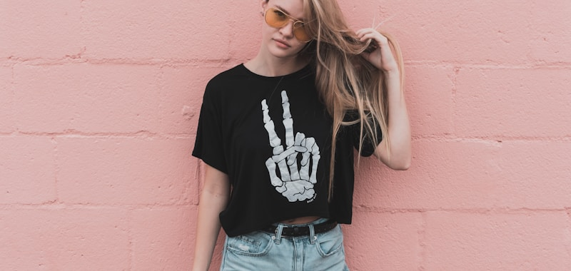
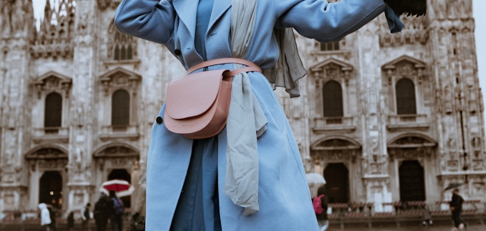
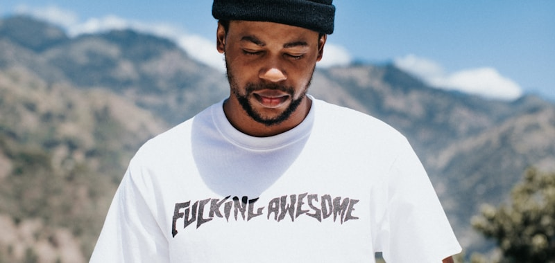

Every man thinks he gets dressed for himself. He is wrong.
Whether he admits it or not, the average man's wardrobe is less a collection of clothes and more a carefully curated argument about who he is. Every item — from the deliberately distressed denim to the $400 fleece vest he doesn't need because he works from a climate-controlled apartment — is a sentence in a story he's been telling to anyone who'll look.
The performative male is not a new creature. Thorstein Veblen wrote about him in 1899. Pierre Bourdieu wrote about him in 1979. TikTok simply gave him a comment section and the ability to see exactly how well the performance is landing.
What follows is a field guide. Consider it a public service. These are the six most common species of performative male, their natural habitats, their signature plumage, and — crucially — the one question guaranteed to unravel the entire performance if you ask it out loud.
Quick Reference Taxonomy
| Species | What They're Performing | Signature Item | Threat Level |
|---|---|---|---|
| The Soft Male | Emotional availability | Canvas tote bag | Harmless |
| The Gorpcore Guy | Outdoor competence | Salomon trail runners | Mild |
| The Tech Bro | Casual power | Patagonia vest | Moderate |
| The Hype Beast | Cultural knowledge | Unworn limited-edition sneakers | Significant |
| The Gym Bro | Physical optimisation | $200 compression shorts | Significant |
| The Wanderer | Worldly non-conformism | Linen shirt, permanently wrinkled | Dangerous |

The most discussed species of 2025. You will recognise him by the canvas tote bag that contains, at all times: one paperback (spine facing outward, always), a film camera, wired earphones he insists sound better than AirPods, and a Labubu keychain from a blind box series he absolutely "just happened to get."
The wardrobe is a carefully assembled argument that he is emotionally available, culturally fluent, and feminist-aligned. Thrifted cardigan. Baggy jeans. Doc Martens or worn-in leather loafers. Multiple delicate silver rings. Round-frame glasses for the academic air, regardless of whether his vision is fine. His Substack is called something like soft edges and contains three posts, the last of which was published in October.
The tell? Ask him what the bell hooks book is actually about. Not the title. The book.
- Book spine is perfectly uncreased despite "having read it three times"
- The tote bag strap is positioned to maximise title visibility in photos
- Listens to Clairo, Laufey, boygenius — can name all three, can hum none
- Has a very strong opinion about "finding the right coffee shop energy"
- The film camera has never produced a photo he was satisfied with

Gorpcore — named after trail mix, the food of people who actually go outside — is the performance of outdoor competence without any of the outdoor activity. The Gorpcore Guy wears technical gear built to survive a Norwegian winter to walk from his apartment to a café that charges $7 for a pastry.
The Arc'teryx jacket (GORE-TEX, waterproof to extreme conditions) protects him from mild drizzle. The Salomon trail runners (engineered for mountain terrain) navigate tile floors. The Nalgene water bottle (built to survive falls off cliffs) contains filtered tap water and a reusable straw. This is survival gear for a world where the main hazard is your reservation being misheard at the host stand.
GQ once noted that "gorpcore is the only performance aesthetic that's actually performing" — meaning the gear was at least designed for what it signals. Whether the wearer has ever activated its purpose is a different question entirely.
- Jacket has no mud on it. Not a single scuff. It is a flag, not a tool.
- The Nalgene has stickers from parks he "wants to visit"
- Last outdoor activity: walking to the car
- Can name three colourways of the Arc'teryx Beta AR. Has been to zero mountains.
- The Salomon runners are clean enough to eat off
"He is communicating: I could survive without infrastructure if I had to. The punchline is that the only thing being conquered is the queue at Blue Bottle Coffee."— Clozet, March 2026
The Patagonia vest became so associated with tech and finance that it was nicknamed "the fleece vest of power" — and then the men wearing it had to decide whether to keep wearing it ironically or stop wearing it entirely, which is itself a performance. Most kept wearing it.
The Silicon Valley uniform communicates something very specific: I am casual about wealth. I have transcended the need to impress you through clothing. I care about outcomes, not appearances. This message is delivered via a $250 vest over a $120 merino sweater, with $300 dark denim, clean white sneakers, and an Apple Watch that costs more than your rent.
The beautiful irony of this aesthetic is that it is the most self-aware performance on this list. The Tech Bro knows he's doing it. He just believes that knowing about it excuses him from it. It does not.
- Will mention "we're focused on outcomes" within 3 minutes of any conversation
- Patagonia vest has a company logo embroidered on the chest. The company is his.
- Calls wearing a suit "a cosplay for people who need to signal status"
- The Apple Watch is set to display his resting heart rate at all times
- Has one pair of jeans. They cost $280. They are described as "simple."

The hype beast's natural habitat: anywhere with good lighting and a lens nearby.
The Hype Beast has solved fashion by turning it into an investment thesis. He does not wear clothing. He holds positions in clothing. The sneakers are not for wearing — they are for photographing, listing on StockX, watching appreciate, and never, under any circumstances, actually putting on your feet.
The box logo Supreme hoodie is not a hoodie. It is a statement about cultural access — specifically, that he knew about the drop before you did, queued before you would have, and owns a thing you cannot easily obtain. The logo is the whole point. The garment underneath the logo is irrelevant to the enterprise.
- Sneakers have original box, original receipt, tissue paper undisturbed
- Will tell you the resale value of his outfit before you ask
- Has an opinion on every colourway of a shoe he has never worn
- The fit is secondary to the items. The items are always primary.
- Follows 34 sneaker news accounts. Zero style accounts.

The Gym Bro's performance is the most physically demanding of all the species — he has actually committed to the bit. The body is the canvas. The compression wear (Gymshark, Lululemon, maybe a single Under Armour item he's slightly embarrassed about) is the frame. The protein shaker is the accessory.
What is being performed here is discipline. The signal is: I wake up before you, I track things you don't track, I have turned my body into a project and I am managing it with the focus of someone who could be running a small company. The ABC trousers and the quarter-zip are his business casual. The gym wear is his evening wear. The tracksuit is his weekend wear. He has achieved a complete mono-wardrobe, which is, in a strange way, the most minimalist outcome on this list.
- Can tell you his body fat percentage to one decimal place, unprompted
- The 1-gallon water jug has motivational text printed on the side
- Wears compression shorts to the supermarket "because they're comfortable"
- Has a protein powder for every hour of the day, apparently
- His Lululemon ABC trousers are genuinely the best trousers anyone owns
The Wanderer is rated most dangerous on this list not because of anything he does, but because of what he implies. The look — loose linen shirt (wrinkled just enough), worn leather sandals, small weathered rucksack, faded canvas tote with the logo of a market from a city he mentions frequently — implies a life of movement, experience, and non-institutional freedom.
You never ask a Wanderer where he just got back from. The look only works as implication. The moment he has to produce an actual location, the spell breaks. He is "between projects." He knows a place in Lisbon. He has strong opinions about Hanoi's coffee culture that he will share without prompting. The linen shirt was purchased in a market two weeks ago and has been machine-washed twelve times to achieve this specific level of distressed casualness.
The threat level is high because this is the only performance on this list that directly implies the wearer has found something the rest of us are missing. Every other performative male is showing off a thing. The Wanderer is showing off an entire alternative way of being alive.
- Cannot name a specific hotel, airline, or dates when asked about "the trip"
- The leather sandals were bought on ASOS and treated with a weathering kit
- Has a "favourite" city for every category of activity, none of which is his home city
- Uses the phrase "it's all about slowing down" while ordering a double espresso
- The rucksack contains a laptop, cables, and three chargers. No passport.
"The most self-conscious aesthetic is the one that claims to have no aesthetic. Authenticity is not free — it is the most expensive performance on the menu."— Clozet, March 2026
So What Do We Do With All This?
Here is the thing I genuinely believe, after thinking about this far longer than is reasonable: there is nothing wrong with dressing performatively. Every single human being who has ever made a deliberate choice about what to wear has performed something. The question is just whether you're performing intentionally or by accident — and whether the thing you're performing is actually true.
The Gorpcore Guy who has genuinely hiked every weekend for ten years has earned those Salomons. The Soft Male who actually read the book and actually changed the way he thinks about the world can carry the tote with no irony. The Gym Bro who loves training and is not doing it for anyone but himself has the most functional wardrobe of anyone on this list. The Wanderer who actually moves, actually stays, actually goes back — that linen shirt means something.
The performativity isn't the crime. The crime is wearing the costume without doing the homework. Fashion that lies is the only kind that has ever looked truly bad.
Which species are you? (Don't answer that. We both already know.) Drop your honest assessment in the newsletter reply — this one always gets interesting responses.